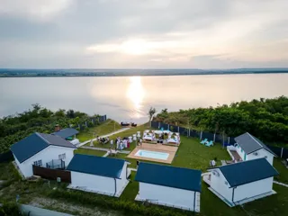
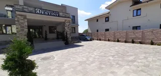
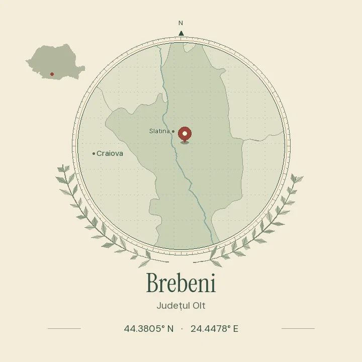
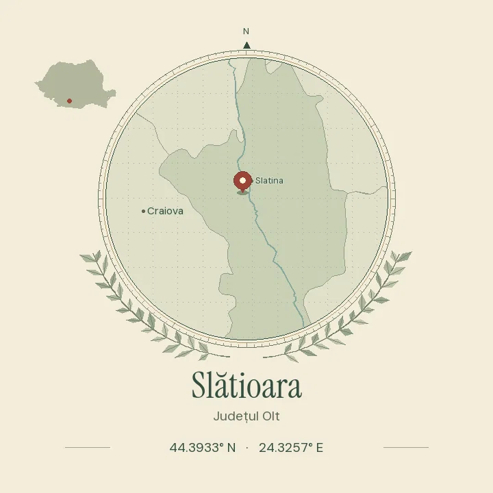

Locații de nuntă în județul Olt
- locații în director
- 4
- cu cazare în registrul SITUR
- 1
- medie ponderată Google
- 4,4 / 5
- evaluări Google
- 523
Cum alegi unde mergi la vizionare
Lista din Olt este scurtă și se poate parcurge integral înainte de a extinde căutarea. Comparați Slatina și Slătioara după adresa de acces și spațiul pe care îl puteți rezerva. Dacă o curte deservește și restaurantul, întrebați cum se separă mesele nunții.
Breeze By The Lake are în fișa de la Schitu Deleni un ponton, terasă, loc de joacă și cazare. Puteți compara într-o singură vizită locul pentru fotografii, cel în care ar sta copiii și spațiul de la masă. Dacă preferați orașul pentru cununie, luați în calcul și varianta de a folosi proprietatea pentru prânzul de după, cu ceremonia ținută separat.
Două adrese pentru o zi de vizionări
Pe hartă, între aceste două proprietăți sunt 5,4 km în linie dreaptă. Deschide indicațiile de drum din fișe ca să vezi traseul pe șosea înainte de a stabili a doua întâlnire.
- La Conac Olt - Restaurant Pentru Evenimente · Strada Barajului 2, 237410 Slatioara, Olt
- Vila Turistica Destiny · Strada Văilor 13D, 230121 Slatina
Explorează după localitate
Toate locațiile din județul Olt
Ordinea ține cont de nota Google și de numărul evaluărilor. Cum calculăm ordinea

Fotografie a locației · Sursa fotografiei Schitu Deleni · Pensiune
Breeze By The Lake
Breeze By The Lake, în Schitu Deleni, are patru căsuțe, un ponton și o terasă de 50 m². Compară tarifele de cazare și variantele pentru masa pe malul apei.
237477 Schitu Deleni+40 722 558 323
Fotografie a locației · Sursa fotografiei Slatina · Vilă
Vila Turistica Destiny
Vila Turistica Destiny. Pentru a evita neînțelegerile, separați în ofertă rezervarea camerelor, închirierea spațiilor comune și intervalul fiecărui eveniment.
Strada Văilor 13D, 230121 Slatina+40 734 650 631
Hartă ilustrată Brebeni · Bed & Breakfast
Casa cu Nuc
Casa cu Nuc. O persoană care a încercat să rezerve șapte camere pentru un grup relatează că a găsit porțile închise la sosirea pentru discuție.
Str. Principală 422, Brebeni+40 746 243 991
Hartă ilustrată Slătioara · Local pentru evenimente
La Conac Olt - Restaurant Pentru Evenimente
La Conac Olt - Restaurant Pentru Evenimente. Într-un comentariu despre La Conac Olt, un vizitator își imaginează cât de plăcută ar fi o orchestră afară seara.
Strada Barajului 2, 237410 Slatioara, Olt+40 767 835 716
Întrebări despre locațiile din județul Olt
Unde pot dormi invitații în județul Olt?
În registrul de cazare SITUR găsim Vila Turistica Destiny (10 locuri de cazare). Verifică ce camere sunt libere pentru noaptea evenimentului.
Ce proprietăți din județul Olt au grădină sau terasă?
Breeze By The Lake (terasă, ponton); Vila Turistica Destiny (terasă). Cere administratorului condițiile de folosire pentru o petrecere privată.
Care locație din județul Olt are cele mai multe evaluări Google?
Casa cu Nuc are 319 evaluări în profilul Google folosit la documentare. Evaluările acoperă și alte experiențe la proprietate, inclusiv vizitele fără eveniment.
Unde apare o intrare accesibilă în județul Olt?
Profilurile Google indică o intrare accesibilă la Vila Turistica Destiny. Pentru o cununie în exterior, cere detalii despre traseul dintre intrare și zona cu scaune.